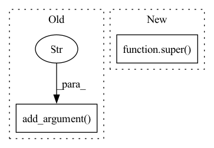

Pattern ID :36603

Before Change
@staticmethod
def add_argument(parser):
parser.add_argument("--output", dest="output", type=int,
help="output level, defaults to config[attack][output][dataset].")
parser.add_argument("--attack_adapt", dest="attack_adapt", action="store_true",
help="Adaptive attack to add fake queries.")
parser.add_argument("--fake_percent", dest="fake_percent", type=float,
After Change
@classmethod
def add_argument(cls, parser):
super().add_argument(parser)
parser.add_argument("--attack_adapt", dest="attack_adapt", action="store_true",
help="Adaptive attack to add fake queries.")
In pattern: SUPERPATTERN
Frequency: 3
Non-data size: 2
Instances
Fragment ID: 104177623
Project Name: ain-soph/trojanzoo
Commit Name: 764cc91dfbe9d789c5e9485f87938464d5179c8f
Time: 2020-09-11
Author: ain-soph@live.com
File Name: trojanzoo/parser/defense/adv/advmind.py
M Class Name: Parser_AdvMind
N Class Name: Parser_AdvMind
M Method Name: add_argument(2)
N Method Name: add_argument(1)
M Parent Class: Parser_Defense
N Parent Class: Parser_Defense
M File Name: trojanzoo/parser/defense/adv/advmind.py
N File Name: trojanzoo/parser/defense/adv/advmind.py
M Start Line: 18
M End Line: 19
N Start Line: 17
N End Line: 18
'>
Before Change
// momentum settings
parser.add_argument("--base_tau_momentum", default=0.99, type=float)
parser.add_argument("--final_tau_momentum", default=1.0, type=float)
return parent_parser
@property
def extra_learnable_params(self):
After Change
@staticmethod
def add_model_specific_args(parent_parser):
parent_parser = super(BYOL, BYOL).add_model_specific_args(parent_parser)
parser = parent_parser.add_argument_group("byol")
// projector
'>
Fragment ID: 104177622
Project Name: vturrisi/contrastive-learning
Commit Name: a47bb52eeeb836a919c105a9dcd27930c9124ec4
Time: 2021-06-14
Author: vt.turrisi@gmail.com
File Name: solo/methods/byol.py
M Class Name: BYOL
N Class Name: BYOL
M Method Name: add_model_specific_args(1)
N Method Name: add_model_specific_args(1)
M Parent Class: BaseMomentumModel
N Parent Class: BaseModel
M File Name: solo/methods/byol.py
N File Name: solo/methods/byol.py
M Start Line: 64
M End Line: 74
N Start Line: 42
N End Line: 42
'>
Before Change
// momentum settings
parser.add_argument("--base_tau_momentum", default=0.99, type=float)
parser.add_argument("--final_tau_momentum", default=1.0, type=float)
return parent_parser
@property
def extra_learnable_params(self):
After Change
@staticmethod
def add_model_specific_args(parent_parser):
parent_parser = super(MoCoV2Plus, MoCoV2Plus).add_model_specific_args(parent_parser)
parser = parent_parser.add_argument_group("mocov2plus")
// projector
'>
Fragment ID: 104177624
Project Name: vturrisi/contrastive-learning
Commit Name: a47bb52eeeb836a919c105a9dcd27930c9124ec4
Time: 2021-06-14
Author: vt.turrisi@gmail.com
File Name: solo/methods/mocov2plus.py
M Class Name: MoCoV2Plus
N Class Name: MoCoV2Plus
M Method Name: add_model_specific_args(1)
N Method Name: add_model_specific_args(1)
M Parent Class: BaseMomentumModel
N Parent Class: BaseModel
M File Name: solo/methods/mocov2plus.py
N File Name: solo/methods/mocov2plus.py
M Start Line: 62
M End Line: 75
N Start Line: 39
N End Line: 39